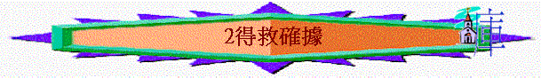

教師版
經文：約10：27－28，弗 1：13－14，來 7：25，約壹 1：9
A)人的軟弱
1)不明白真理
信了主的人是已得救的，但不明白 神的真理，而常害怕自己死後不能上天堂。更甚者是雖信了主，但仍無真平安在心中，常以為自己未得救，以為若行得不好便會下地獄。
例：有一個人趺下海去，將要淹死時被別人救上岸來，這時他想：「我是不是還在水中呢？因我的衣服還是濕透了。」這合不合理呢？這當然是不合理，因他是明明被救
上來，只是他還在懷疑自己的得救而已。
2)被別人動搖
我們在初信時因對真理的蓋識不足，很易因自己的看法或別人的錯誤看法而落入害怕當中。
例：小時候，我們的父母有時因我們頑皮；而說我們不是他們所生的，我們會因此而害怕，或有人說我們是石頭爆出來的，我們因無知而相信，因而引出很多的不愉快或害怕。
常有人以動搖基督徒的信心為他們的快樂。
3)魔鬼的欺騙
魔鬼撒但會欺騙我們，告訴我們是不能得救或未得救，因牠不甘心主耶穌將我們從牠手下拯救出來，故常用種種欺騙的方法使我們終日惶恐，不能享受救恩之樂。
B)錯誤觀念
1)得救不是憑人的感覺
有人因他在初信時很快樂，而淚在沒有此感覺，而以為自己未得救。
例：有人產下嬰兒時，很是快樂，但當日子一天天的過去，那一種的快樂不存在了，那麼他是否等同沒有生過孩子呢？答案當然是「否」的，孩子實在生下來了，不存在的只是那種感受，這不會也不能否定了孩子出生的事實。
例：若我們當中有人曾得到獎學金，我們當時一定很跚心，但日子一天天的過去，我們的感受亦漸漸的減退，但這不能抹殺得獎學金的事實。
2)得救不是靠典型的經歷
有人以自己的得救不似別人而懷疑自己是否得救，這是錯誤的，因在聖經中，有很多人的得救經歷不是全然相同的，但他們卻同為得救的人。
3)得救不是靠行為
有人以為因自己的行為好，才可以得救，一旦自己軟弱落入罪中，就以自己為不得救，故常有人以為要表淚好一點才可以得救，這是因不明白真理而有的誤會。
例：搭地下鐵最少要四元才有一張票，你有三元，我一元也沒有，你會不會因比我有多三元而可以搭地下鐵呢？淚在有人送我們一人一張地下鐵的車票，是不是因你比我多三元而有的呢？不是的！乃是白白得來的。何況 神的救恩更為你我所不能支付的，不是因行為而決定的你我的得救，乃是因相信主耶穌而白白蒙恩。
C) 神的應許
神如何應許我們？
聖經告訴我們是因信主耶穌而得救，而主耶穌說祂將永生賜給我們（留心聖經將人比作羊），我們是永不滅亡。甚麼是永不滅亡呢？這表示絕對的保証我們是得救的，我們的確有永生，是不容否蓋的。 神不會叫信主耶穌的人滅亡的。
例：一個人生下來就是他父母的孩子，不因他的行為如何，他總是他父母的孩子。這是生命的關連。我們與 神也有生命上的關連，因 神「已」將祂的生命賜給我們了。神又應許痐]不能從祂手中將我們奪去，因祂用大能來保守我們。
D) 神的保証
因聖經告訴我們 神將祂自己的聖靈放在我們裡面，聖靈為 神給我們最大的保証，因神不可能不要聖靈，這是不可能發生的事（日後再詳談關乎 神與聖靈的關係）。 聖經說聖靈為 神給我們的一個憑據，由此可知我們是得救的。
例：我們去買東西，落訂多是物件的部份價錢，我們不會買一仟元的東西而付一萬元的訂金。若是付此價錢即表示我們必定要此物件。我們犯罪是不值得 神救我們，更不值得 神用聖靈作為訂金給我們，但 神為要我們安心，並使我們確知有永生，祂自己用此來作保証叫我們信主後可安心地過生活，等候主耶穌再來接我們回天家，加上神是永不說謊的，祂所說過的必定會兌淚，我們要確信祂的應許
E)一點提醒
我們經常產生疑惑是因在信主之後仍有犯罪，這使我們懷疑我們自己的得救，一個信主之人為何仍會犯罪呢？其實我們留心我們在信主前犯罪是不以為恥的，沒有一點覺得不對， 在信主之後，我們犯罪是有感覺的，因 神在我們內心有提醒，但我們因習慣、信心軟弱、不順服 神而犯了，在犯罪後我們知是得罪 神而失去平安及心中自責，這一切是未信主前沒有的，因我們淚今有一個新生命了，是不愛犯罪的，並且對罪是有抗拒的。
例：豬是愛污穢的，若為牠洗淨了身體，牠也會去弄污自己的身體，因牠的生命是愛污穢的，但若是羊弄污了身體，牠就很不舒服了，因牠是愛乾淨的，非將身體弄乾淨不可，這可見不同生命有不同的表淚。我們屬主的人亦擁有一個愛乾淨的生命。
我們生存在世界上，難免有從世上而來的引誘，人亦不是常常有好的靈性（足夠的信心）去面對，會有受污染的情形出淚， 神亦早知道，故早賜下應許]約壹 1：9）。
例：主耶穌在世上時，人們先潔淨自己才去宴會，由於所穿的鞋不是現今般包著整對稞， 加上所行的是泥濘路，到宴會時已是滿稞泥濘，這樣他是不是要再回家洗一次澡呢？
若是如此，他則永不可能參加宴會，因路上的泥濘常在，他的鞋仍是那個樣式，那他應如何作呢？當時在宴會的門口有石水缸，內有水給客人到達時洗稞，只這一洗就乾淨了。
我們信主的人，淚今行走天路，不免為世上的污穢弄糟了，但我們是真實得救了，不因偶然犯罪就不得救，而主耶穌亦為我們預備了一個洗罪的泉源，我們若不慎犯了罪，可到主的面前求主潔淨我們，可是要留心不要因有永生的確據就隨便犯罪，因這不是不明白 神
的恩典及誤用 神的恩。例：若我有一瓶止血膏，會不會要用刀割傷自己，然後抹上藥膏呢？當然不會，不因有藥膏就會故意傷害自己，藥膏乃是在我們不慎弄傷時才用的，故有永生的確據不是給我們更多機會去犯罪，反要感謝 神的恩典而靠 神不再犯罪。
下次我們要來學習看神的話──聖經。
學生版
經文：約 10：27－28、弗 1：14、來 7：25、約壹 1：9
A)人的軟弱
1)不明白真理：得救就是得救，未得救就是未得救，沒有部份得救的。
2)被別人動搖：人的看法是會改變的，惟有 神的話才是永恆不變的。
3)魔鬼的欺騙：魔鬼不甘心人得著救恩，總是用盡方法叫人害怕，使人沒有平安。
B)
錯誤的觀念1)得救不是憑人的感覺，因人的感覺是會改變，如受著環境、情緒、精神等所影響。
2)得救不一定有著典型的經歷，因每個人的得救經歷不一定是一樣的。
3)得救不是靠行為，因得救全是 神的恩典，沒有人的功勞在其中。
C)神的應許
「我又賜給他們永生，他們永不滅亡，誰也不能從我手裡把他們奪去，我父把羊賜給我，祂比萬有都大，誰也不能從我父手裡把他們奪去。」 約 10：28-29
世界上有那雙手比天父及主耶穌的手更有能力呢？沒有！故此主的保證（我們信祂的人是永不滅亡）是真實的，更是可信的。
D)神的保證
「你們既聽見真理的道，就是那叫你們得救的福音，也信了基督，既然信祂，就受了所應許聖靈為印記，這聖靈原是我們得基業的憑據....」
弗 1：13-14
憑據在聖經的細字中是質，即人質或者可以說是一個有力的保證。聖靈為神給我們一個極大的保證。
E)一點提醒
信主的人是有一個新生命，是一個不愛犯罪、對罪有知覺及有抗拒的生命，與未信之前犯罪的生命不同的。
「耶穌說：『凡洗過澡的人，只要把稞一洗，全身就乾淨了...』」
約 13：10上
「我們若認自己的罪， 神是信實的，是公義的，必要赦免我們的罪，洗淨我們一切的不義。」 約壹 1：9
若有罪要如何作？ 認罪
神是一位怎樣的 神？ 信實及公義的 神
我們若認罪， 神會怎樣？ 赦免我們的罪及洗淨我們一切的不義
神的赦罪是如何的肯定？ 「必要」